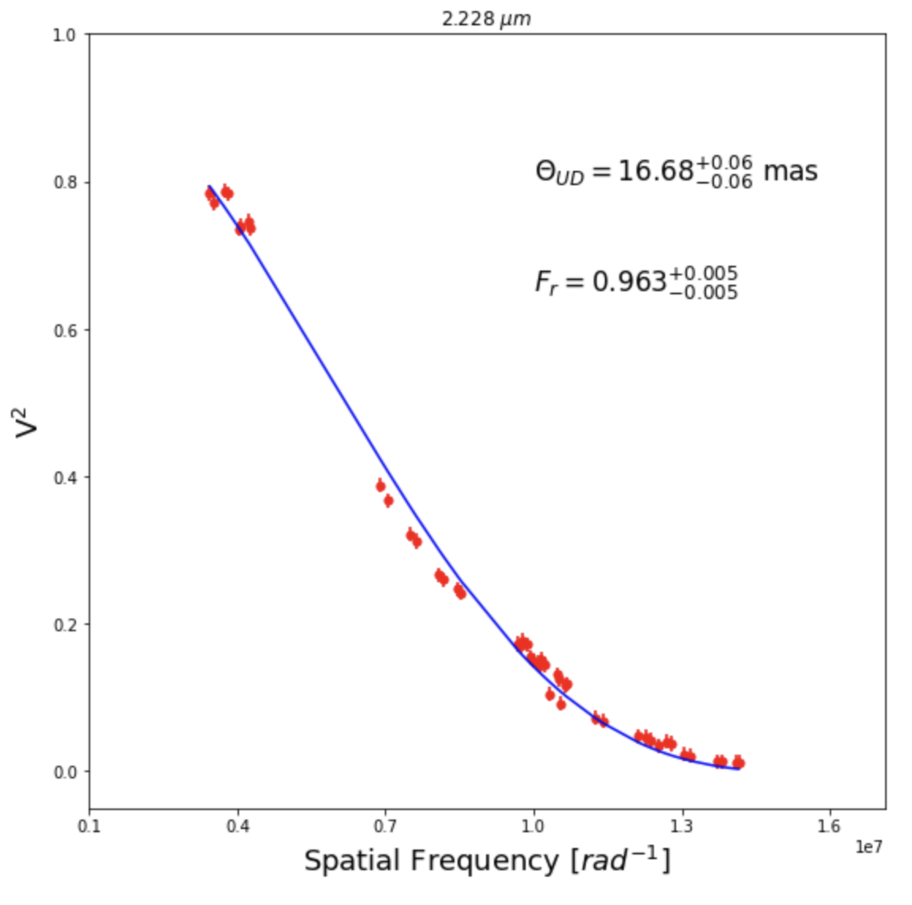
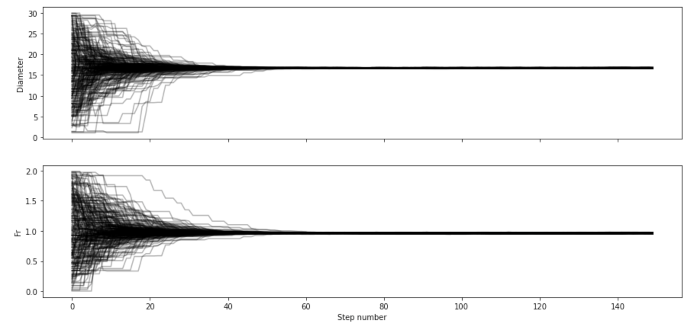
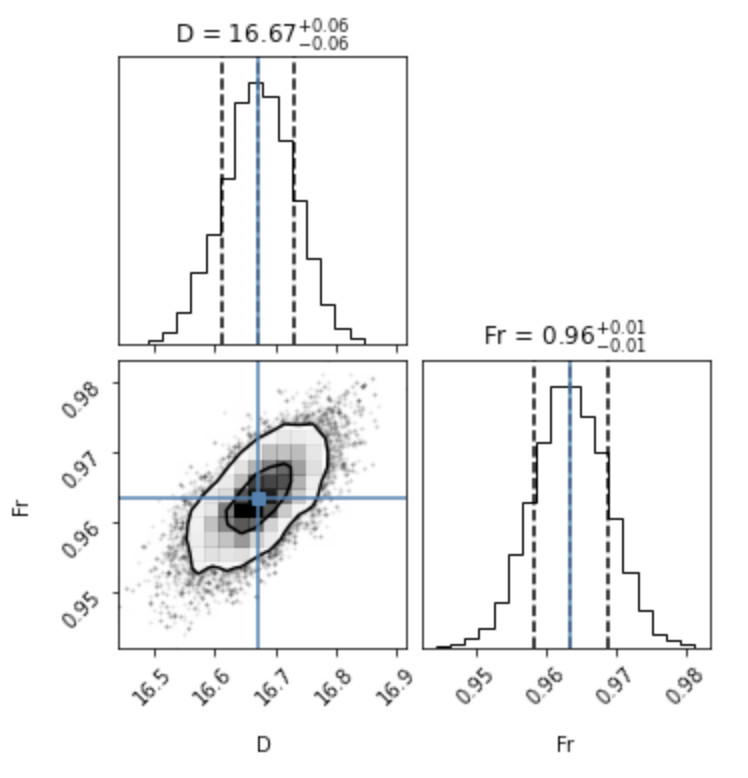
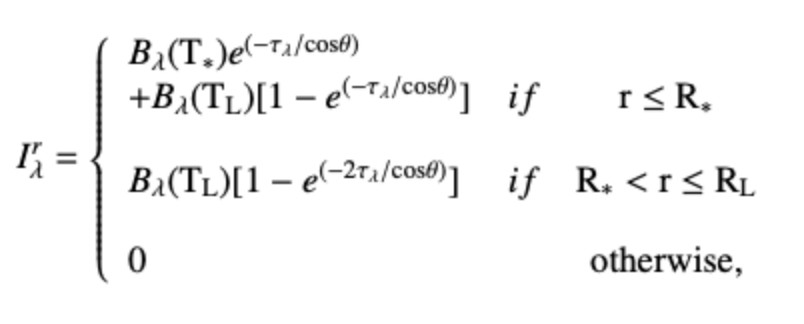
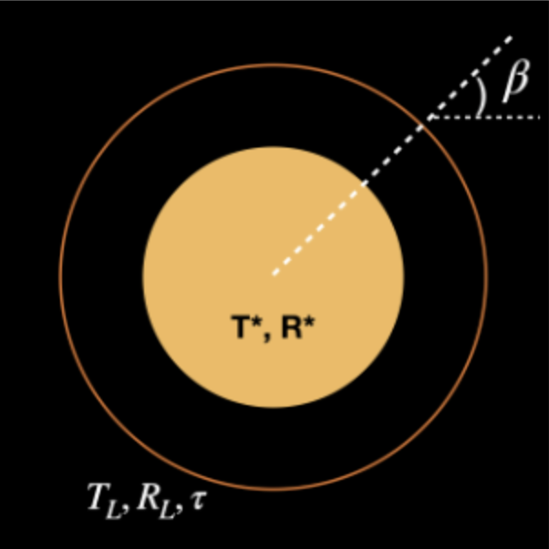
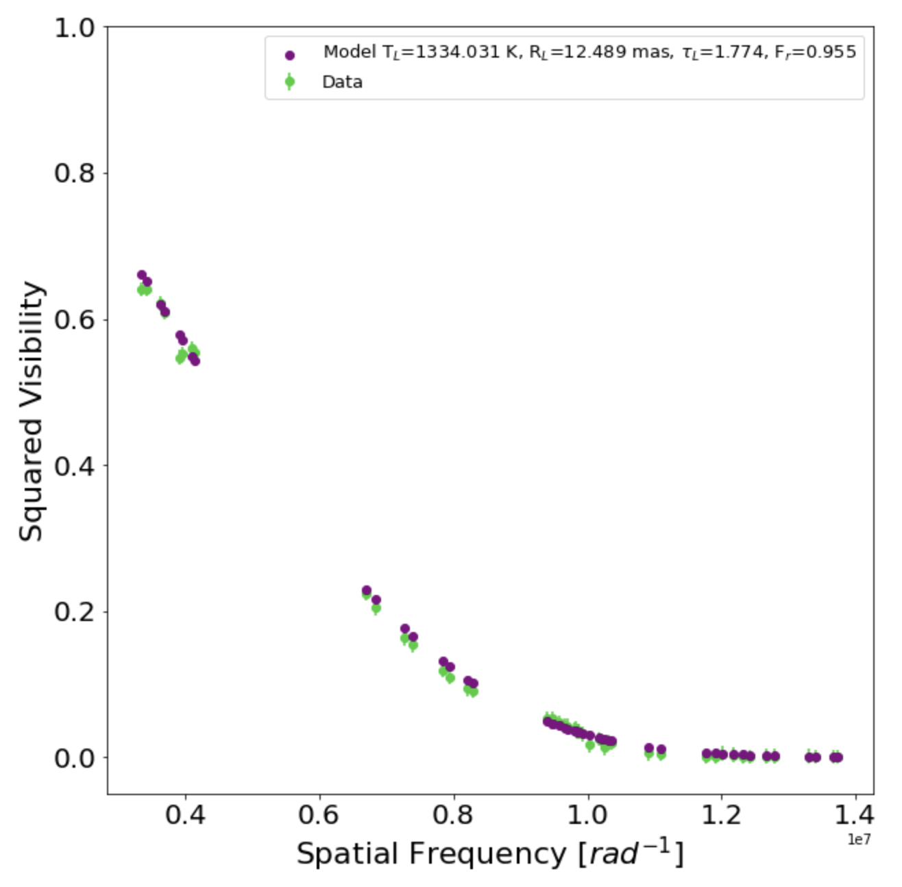
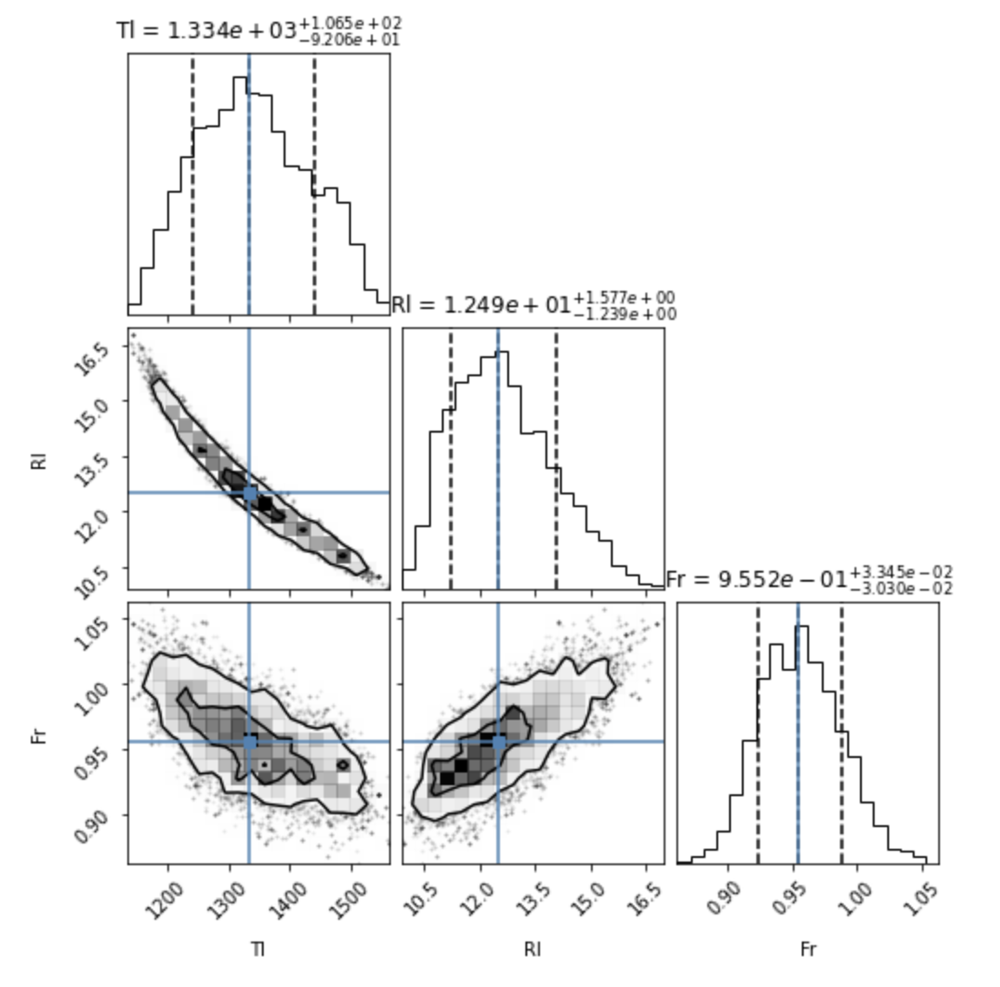
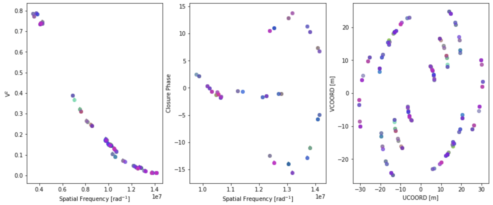
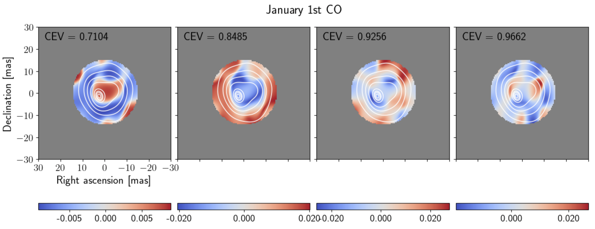
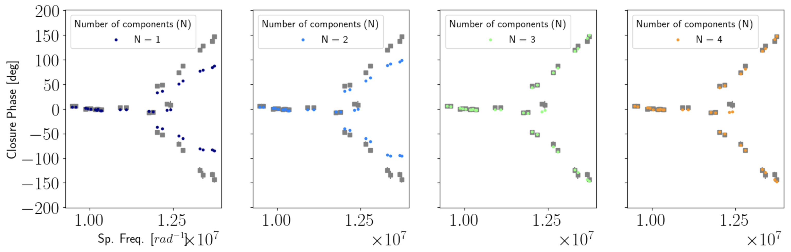

This repository includes software to analyze the GRAVITY-VLTI data of the AGB Mira star R Car.
Link to the GitHub repository with the code, click HERE
1. RCar - GRAVITY
This section contains a series of scripts (in the form of a Jupyter notebook) used for analyzing GRAVITY-VLTI data of the M-type AGB star R Car (see Rosales-Guzman et al. (2023) ). The Jupyter notebook is divided into the following 3 parts. To run the codes, just download the repository and open the Jupyter notebook RCar_analysis.ipynb to star working with it using the following command:
>> user@users_pc ~ % Jupyter notebook RCar_analysis.ipynb
Required packages (Python > 3.0):
MCMC fit to the V2 across the pseudo continuum
To obtain the angular size of R Car across the K-band, we applied a geometrical model of a uniform disk (UD) to the V2 data. The visibility function of our models is given by the following equation (Berger & Segransan (2007)):
where \(\rho = \sqrt{u^2+ v^2}\), u and v are the spatial frequencies sampled by the interferometric observations, J1 is the first order Bessel function, ΘUD and Fr are the angular diameter of the uniform disk profile and a scaling factor that accounts for the over-resolved flux in the observations, respectively. To fit the data, we used a Monte-Carlo Markov-Chain (MCMC) algorithm based on the Python package emcee (Foreman et al., 2013). We let 250 walkers evolve for 150 steps using the data of each spectral bin independently. The results of this code are shown as three plots (Figs. 1, 2, and 3).



Single-layer model to fit the \(V^2\) across the first and second CO bandheads
The MOLsphere model, used to calculate the size, temperature, and optical thickness of the CO layer consists of a stellar disk with a compact layer around it. The star is modeled by a stellar surface of radius \(R_*\) which emits as a black-body at a temperature \(\mathrm{T_{*}}\). It is surrounded by a compact spherical layer of radius \(\mathrm{R_{L}}\) that absorbs the radiation emitted by the star and re-emits it like a black-body. The MOLsphere is characterized by its temperature \(\mathrm{T_{L}}\), radius \(\mathrm{R_L}\) and its optical depth \(\tau_{\lambda}\). The region between the stellar photosphere and the layer is assumed to be empty (See the figure for a skecth of the model). The analytical expression of the model is given by:

where \(I_\lambda^r = I_{\lambda}^r(\mathrm{T_{*}} , \mathrm{T_L}, \mathrm{R_*}, \mathrm{R_L}, \tau_{\lambda})\), \(\mathrm{T_*}\) and \(\mathrm{T_L}\) are the temperatures of the photosphere and of the CO layer, respectively; \(\mathrm{R_*}\) and \(\mathrm{R_L}\) are the angular radius of the star and the layer, respectively; \(\tau_\lambda\) is the optical depth of the molecular layer at wavelength \(\lambda\); \(B_\lambda(\mathrm{T})\) is the Planck function (at wavelength \(\lambda\) and temperature T); and \(\beta\) is the angle between the radius vector and the line-of-sight so that \(\cos\beta = \sqrt{1-(\mathrm{r}/\mathrm{R_L})^2}\).
For the fitting, we adopted a \(\mathrm{T_{*}}\)=2800 K and \(\mathrm{R_{*}}\)=5 mas (Monnier et al., 2014; McDonald et al., 2012). We use the disk estimation reported in the H- band because it is considerably less affected from molecular contribution, in contrast with the K-band where molecules like CO, \(H_{2}O\), and OH among others (see e.g. Wittkowski et al., 2018; Paladini 2011) are present over the entire band. The unknown parameters are then \(\mathrm{T_L}\), \(\mathrm{R_L}\) and \(\tau_L\). We performed a two-step process to estimate these parameters. As first step, for each pair of \(\mathrm{T_L}\) and \(\mathrm{R_L}\), we performed a least-squares minimization to find the best-fit value of \(\tau_L\) that reproduces the spectrum \(F_{\lambda}^{\mathrm{R Car}}\). The next step consisted of using an MCMC method based on the Python library emcee to estimate the best combinations of \(\mathrm{T_L}\), \(\mathrm{R_L}\), and \(\tau_L\) that reproduce the \(V^2\).
To account for the over-resolved flux when modeling the \(V^2\) data, we added a scaling factor Fr. This value was estimated simultaneously with the other parameters in the model.

Figs. 5 and 6 are generated by the single-layer model part of the notebook.


2. Bootstrapp method for image reconstruction
To build new data samples from the original one, we employed the bootstrap technique. The samples were created by keeping the original number of data points unaletered, but allowwing random sampling with replacement. This created some data sets where some points have higher weights than in the original data set, and some others with zero weights. This algorithm also produces slight changes in the u-v plane, which allows us to trace the impact of the u-v coverage on the reconstructed images, without loosing the statistical significance of the original number of data points (see Fig. 7). According to Babu & Singh 1983, the statistical moments such as mean, variance and standard deviation of the bootstrapped samples are good approximations to the statistical moments of the original data sets. Finally, since each bootstrapped data set is different, we will have slightly different reconstructed images.

3. Principal Component Analysis (PCA) to understand the structure of R Car
To have a more precise characterization of the asymmetries in the reconstructed images of the CO band-heads, we used the Principal Component Analysis (PCA) described by Medeiros et al., 2018. Those authors demonstrate that the visibilities of the Principal Components are equal to the Principal Components of the visibilities. This method is useful to trace the changes across a set of images that have the largest effect on the visibility (amplitude and -closure- phase) profile. In our case, we estimate the most significant structural changes of the observed asymmetric structures across wavelength for each of the observed epochs. The following procedure was applied to the ensemble of wavelength dependent images per epoch to extract their Principal Components.
For the PCA analysis, we normalize each data set by subtracting the corresponding mean image and dividing by their standard deviation image across the wavelength range. To perform the PCA analysis, we used the CASSINI-PCA package. This software allows to compute the covariance matrix of the data set and to transform it into the space of the principal components. This allows us to determine the eigenvectors (or eigen-images, in our case) and their corresponding eigenvalues. Since we only have seven images per data set, and the possible number of components must be smaller or equal than the number of images in the data set, we decided to only keep the first four principal components. From our tests, we observed that those components explain, at least, the 93\% of the variance in the data sets.


Disclaimer
All the scripts that compose this repository are part of the A&A article Imaging the innermost gaseous layers of the Mira star R Car with GRAVITY-VLTI from Rosales-Guzman et al. For enquiries and/or contributions please contact jarosales@astro.unam.mx, who is a PhD student associated with this project.